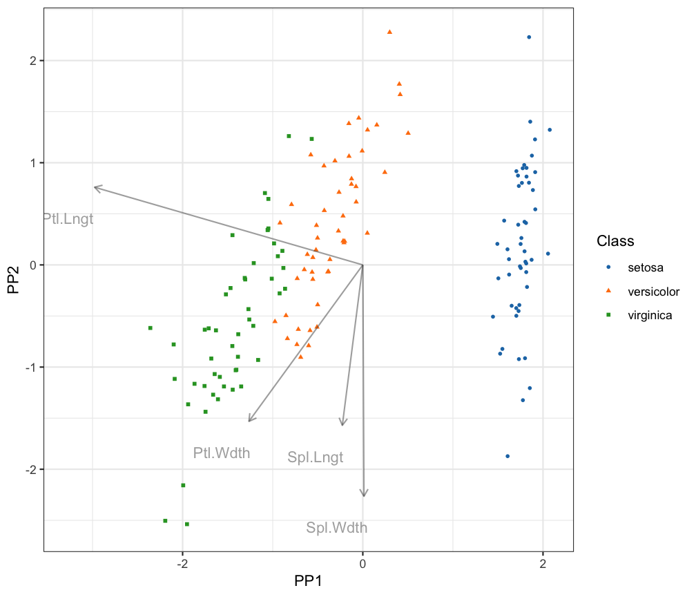

ppgmmga.RdA Projection Pursuit (PP) method for dimension reduction seeking "interesting" data structures in low-dimensional projections. An approximated negentropy index is computed from the density estimated using Gaussian Mixture Models (GMMs). Then, the PP index is maximised by Genetic Algorithms (GAs) to find the optimal projection basis.
ppgmmga(data,
d,
approx = c("UT", "VAR", "SOTE"),
center = TRUE,
scale = TRUE,
gmm = NULL,
gatype = c("ga", "gaisl"),
options = ppgmmga.options(),
seed = NULL,
verbose = interactive(), …)
| data | A \(n x p\) matrix containing the data with rows corresponding to observations and columns corresponding to variables. |
||||||||||||
|---|---|---|---|---|---|---|---|---|---|---|---|---|---|
| d | An integer specifying the dimension of the subspace onto which the data are projected and visualised. |
||||||||||||
| approx | A string specifying the type of approximation to use for computing the negentropy for GMMs. Possible values are:
|
||||||||||||
| center | A logical value indicating whether or not the data are centred. By default is set to |
||||||||||||
| scale | A logical value indicating whether or not the data are scaled. By default is set to |
||||||||||||
| gmm | An object of class |
||||||||||||
| gatype | A string specifying the type of genetic algoritm to be used to maximised the negentropy. Possible values are:
|
||||||||||||
| options | A list of options containing all the important arguments to pass to |
||||||||||||
| seed | An integer value with the random number generator state. It may be used to replicate the results of ppgmmga algorithm. |
||||||||||||
| verbose | A logical value controlling if the evolution of GA search is shown. By default is |
||||||||||||
| … | Further arguments passed to or from other methods. |
Projection pursuit (PP) is a features extraction method for analysing high-dimensional data with low-dimension projections by maximising a projection index to find out the best orthogonal projections. A general PP procedure can be summarised in few steps: the data may be transformed, the PP index is chosen and the subspace dimension is fixed. Then, the PP index is optimised.
For clusters visualisation the negentropy index has been considerd. Since such index requires an estimation of the underling data density, Gaussian mixture models (GMMs) has been used to approximate such density. GMMs do not have a closed formula for the Negentropy and different closed formula approximations have been implemented. Genetic Algorithms have been employed to maximised the approximated negentropy respect to the system of basis in the desidered subspace.
Returns an object of class 'ppgmmga'. See ppgmmga-class for a description of the object.
Scrucca, L. and Serafini, A. (2018) Projection pursuit based on Gaussian mixtures and evolutionary algorithms. Under review.
data(iris) X <- iris[,-5] Class <- iris$Species # Unscented Transformation approximation (default) pp1 <- ppgmmga(data = X, d = 2, approx = "UT", seed = 123) summary(pp1, check = TRUE)#> ── ppgmmga ───────────────────────────── #> #> Data dimensions = 150 x 4 #> Data transformation = center & scale #> Projection subspace dimension = 2 #> GMM density estimate = (VVV,2) #> Negentropy approximation = UT #> GA optimal negentropy = 0.9461873 #> GA encoded basis solution: #> x1 x2 x3 x4 x5 x6 #> [1,] 1.62551 1.170375 0.07635218 0.564489 1.355774 2.316635 #> #> Estimated projection basis: #> PP1 PP2 #> Sepal.Length -0.07013906 -0.4841843 #> Sepal.Width 0.00384141 -0.6982979 #> Petal.Length -0.91821379 0.2345145 #> Petal.Width -0.38980661 -0.4721744 #> #> Monte Carlo Negentropy approximation check: #> UT #> Approx Negentropy 0.946187289 #> MC Negentropy 0.943898857 #> MC se 0.003331479 #> Relative accuracy 1.002424446# NOT RUN { # VARiational approximation pp2 <- ppgmmga(data = X, d = 2, approx = "VAR") summary(pp2, check = TRUE) plot(pp2, Class) # Second Order Taylor Expansion approximation pp3 <- ppgmmga(data = X, d = 2, approx = "SOTE") summary(pp3, check = TRUE) plot(pp3, Class) # }